Character Depth
建立竹狐的起源、使命與成長歷程，使角色不只停留在視覺形象。
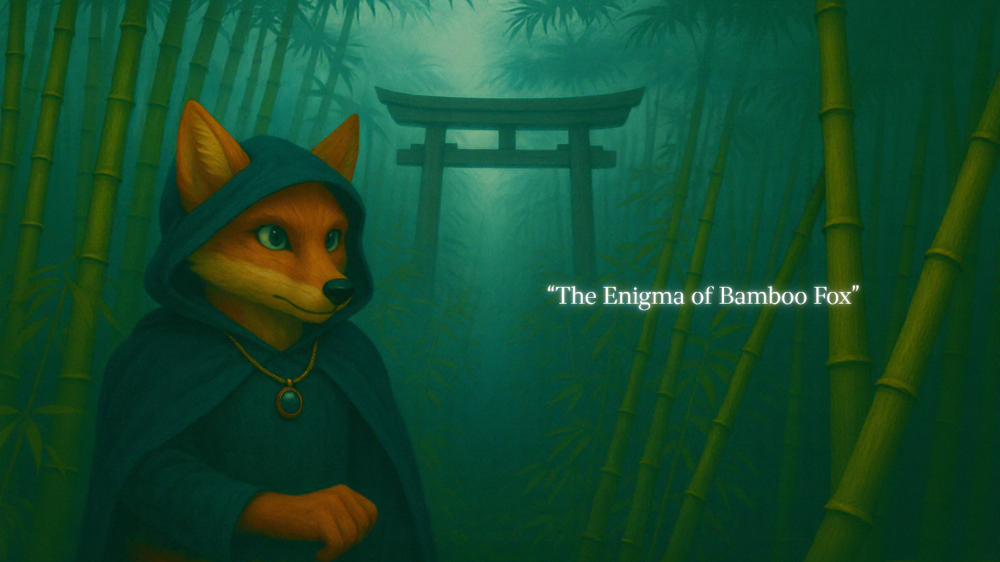
Project Overview
《竹狐未解之謎》是一項結合校園場域、AR 導航與互動敘事的體驗設計， 玩家以第二人稱視角成為竹狐，沿著陽明交大校園點位探索被封印的記憶， 並逐步理解角色身世與守護使命。
專案透過世界觀建立、角色設計、分支腳本與實景任務， 將竹狐從校園吉祥物延伸為具有成長歷程與文化象徵的角色 IP； 同時以 Figma Prototype 模擬 AR、對話與戰鬥選擇之間的完整互動流程。
我參與專案概念發展、世界觀與互動流程討論， 並協助整理角色關係、點位敘事與分支腳本， 將校園場域轉化為具任務節點的互動冒險體驗。
Design Challenge
竹狐已具備高度辨識度，但既有形象多停留在吉祥物與活動象徵， 缺乏可持續發展的背景故事、角色關係與參與方式。
因此，專案不只替竹狐增加故事設定， 而是進一步思考玩家如何在校園中移動、觀察、選擇與完成任務， 讓角色故事透過實際參與被逐步理解。
建立竹狐的起源、使命與成長歷程，使角色不只停留在視覺形象。
將校園地點轉化為具有劇情功能的探索節點。
在長篇故事、跨平台操作與任務挑戰之間維持清楚指引。
Experience Concept
玩家在現實校園中依照 AR 導航前往指定點位， 並透過竹印進入由互動對話所構成的「語者之域」。 現實場域負責提供位置、環境線索與道具， 對話場域則承接角色互動、戰鬥選擇與分支劇情。
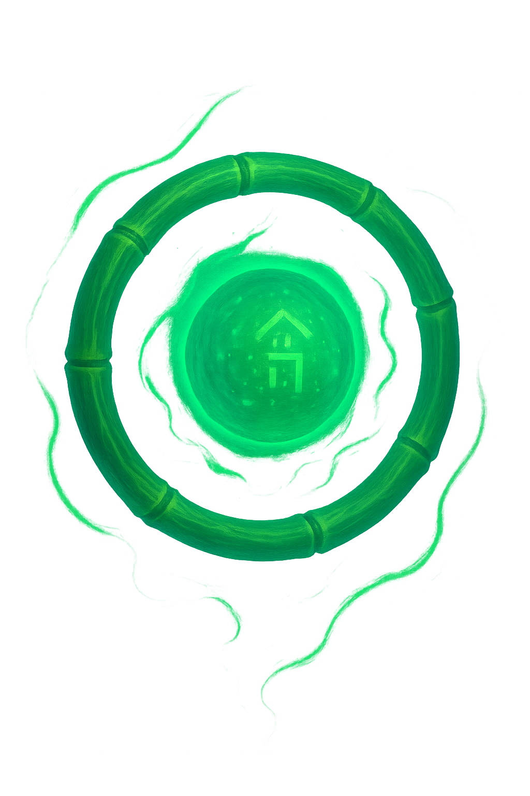
透過校園點位、環境觀察與實景問題， 推動玩家在真實場域中移動。
透過角色對話、二元選擇與文字輸入， 讓玩家影響戰鬥方式與部分故事發展。
30–45 minutes
Narrative World
故事發生在遭血刃軍團佔領的歪西森林。 千年前，竹狐一族與土地公共同守護森林， 卻在戰爭中敗北；年幼的竹狐被封印於竹湖， 直到千年後甦醒。
玩家在土地公的引導下尋找石鏡、月石與珍珠， 解除封印並面對外在敵人與內在陰影。 故事核心圍繞成長、自我對峙、信念傳承與價值選擇。
Character System
每個角色不只負責推動情節，也對應竹狐成長過程中的不同命題： 土地公代表信念傳承，鏡狐象徵內在陰影， 獵岩則呈現立場改變與救贖的可能。
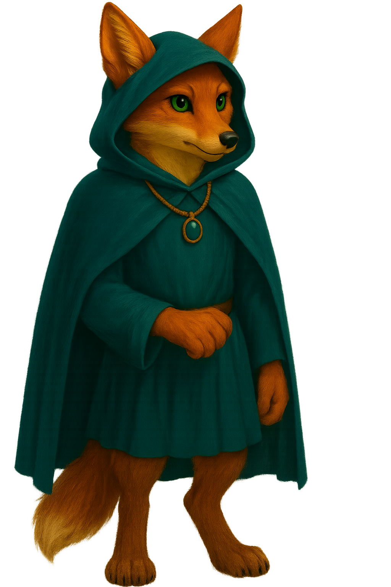
狐族最後的血脈，從迷惘逐步成長為森林守護者。
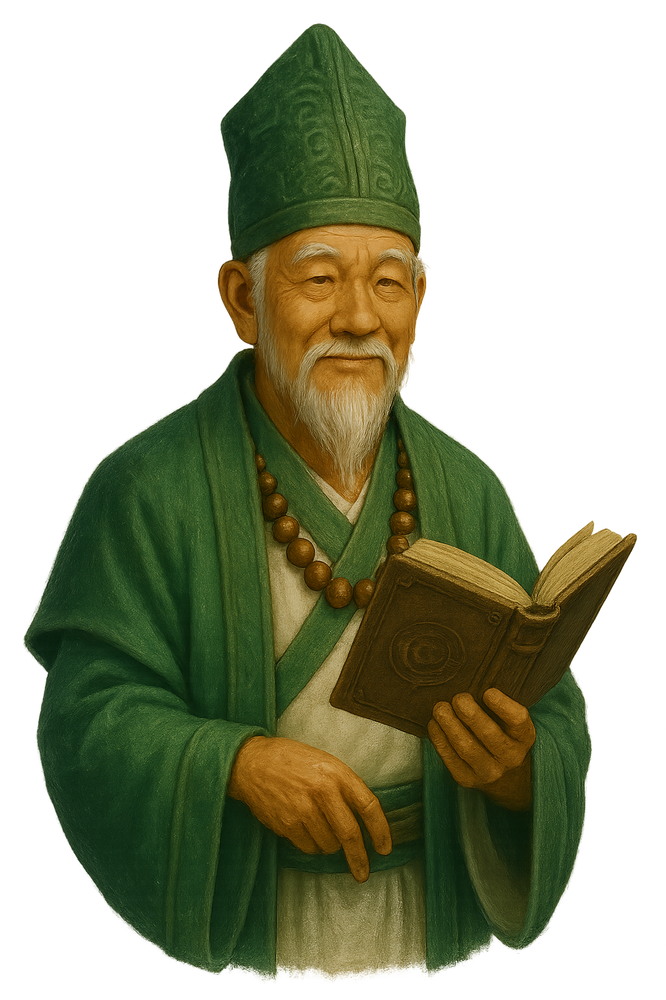
森林守護神與劇情引導者，象徵土地記憶與信念傳承。
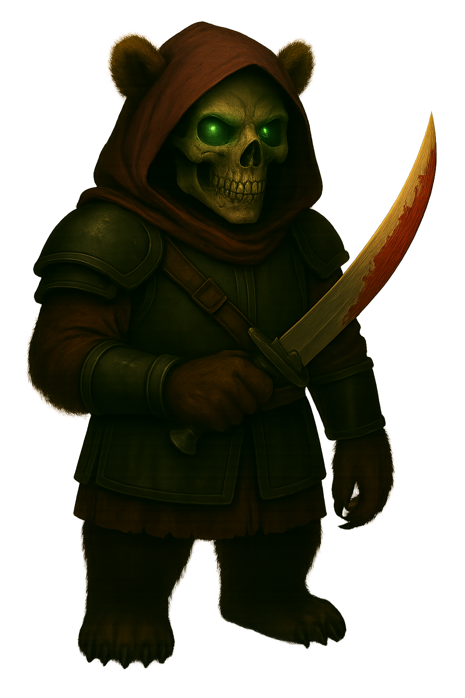
竹狐甦醒後面對的第一個敵人，象徵外在威脅與過去創傷。
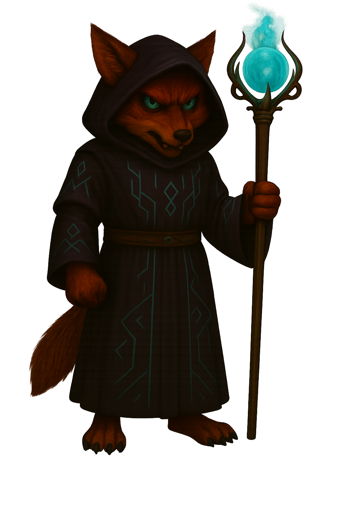
由竹狐的恐懼與逃避具象化而成，是自我對峙的核心試煉。
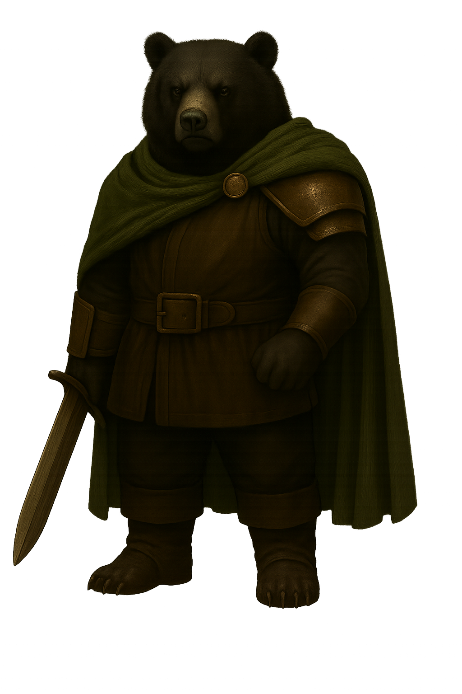
血刃軍團軍師，玩家的選擇將影響其維持敵對或成為夥伴。
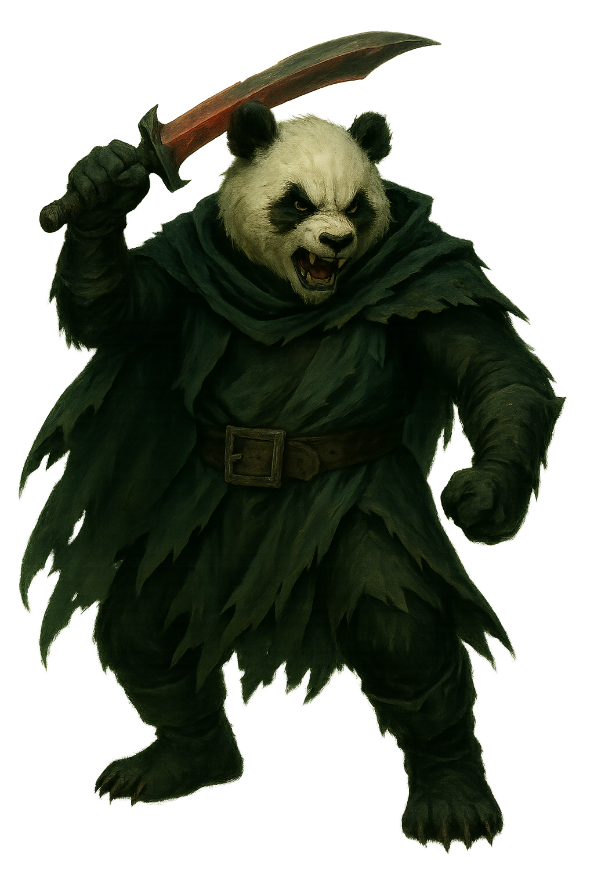
血刃軍團首領，象徵掠奪、毀滅與力量至上的統治。
Interaction Framework
依據 AR 指引前往校園中的下一個故事點位。
從實際環境中尋找數字、圖案、方向與道具線索。
在戰鬥招式、角色回應與價值選擇之間作出決定。
透過選項或文字輸入推動劇情，並在終局命名自己的招式。
Prototype Experience
Prototype 先處理玩家進入體驗時最需要理解的三項資訊： 這是什麼故事、如何開始，以及 AR 與互動敘事如何配合。
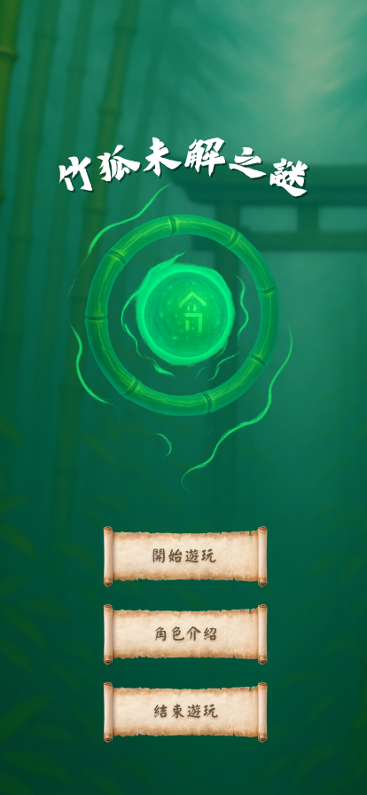
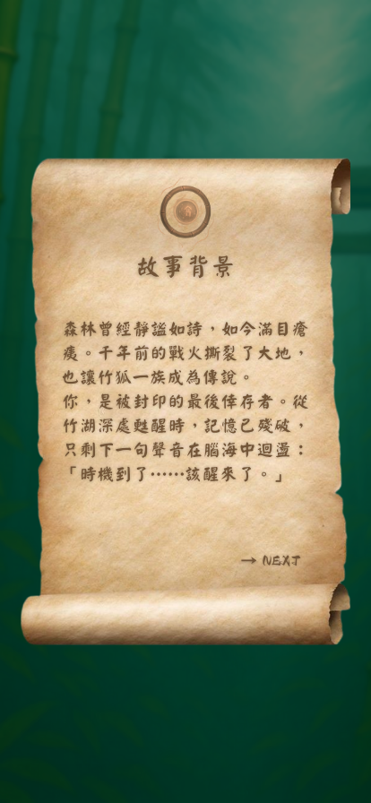
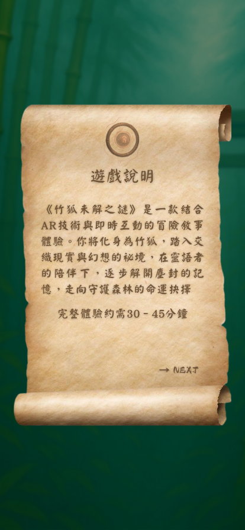
Battle Progression
戰鬥並非只用來增加刺激感， 每個敵人都對應竹狐在成長過程中必須面對的不同課題。
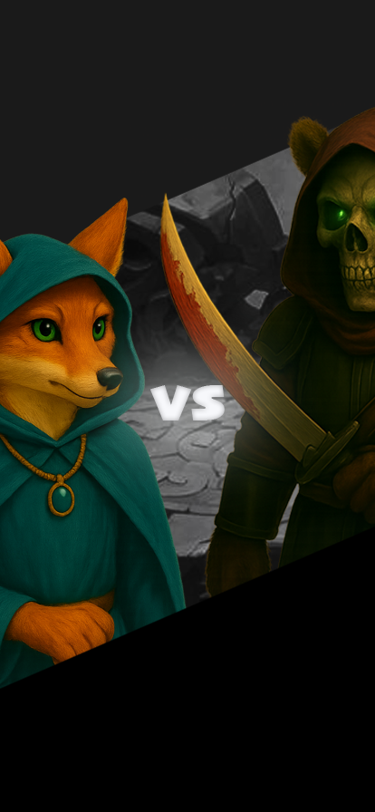
面對血刃刺客與過去創傷形成的第一場試煉。
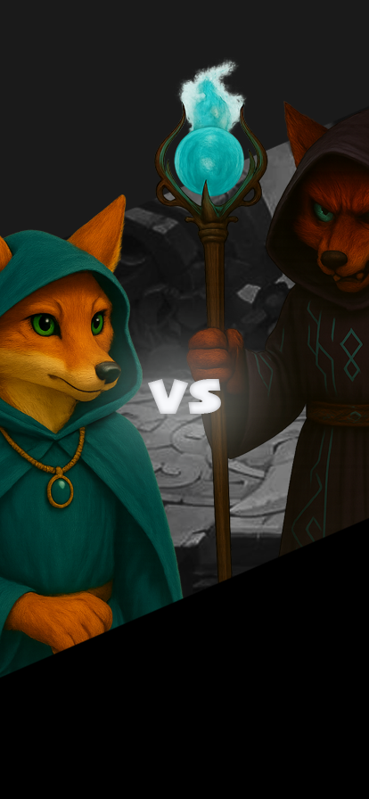
鏡狐迫使竹狐辨識並超越自己的恐懼與逃避。
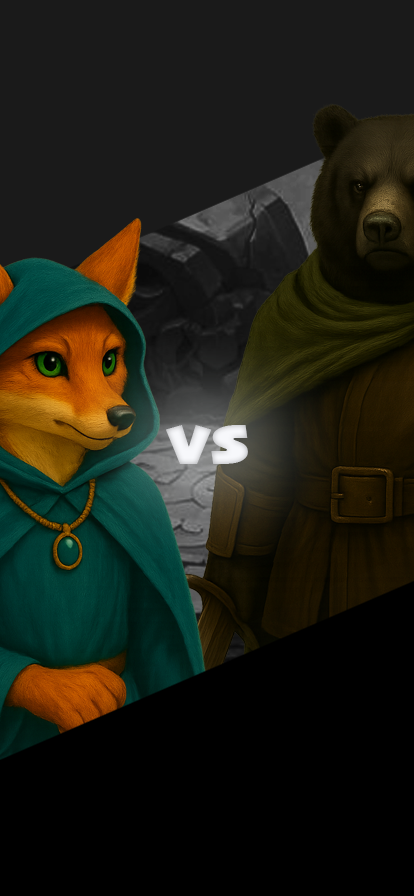
玩家選擇戰鬥或說服，影響獵岩是否成為夥伴。
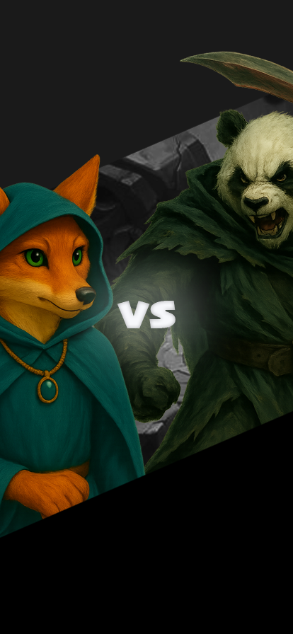
竹狐面對狂刃，完成從甦醒到守護者的轉變。
Development Process
定義竹狐的身世、歪西森林世界觀、主要角色關係， 並透過訪談與討論確認探索、挑戰與成長等體驗價值。
整理角色語氣、問答規則、二元選擇與答錯提示， 並建立只有完成條件後才能推進劇情的互動邏輯。
以 Figma 模擬介面流程， 並規劃 Unity、Blender、動作捕捉與 AR 後台素材的整合方式。
Outcome
專案完成竹狐起源故事、六名主要角色、校園點位敘事、 戰鬥選擇與分支結局的設計，並以 Figma Prototype 呈現玩家從進入遊戲到理解任務的主要流程。
同時，團隊建立了互動腳本規則與 AR 點位內容架構， 作為後續整合角色動畫、語音與對話系統的基礎。
原創世界觀、角色關係與分支故事
導航、問答、二元選擇與文字輸入
Figma 介面與主要遊玩流程
AR、Unity、Blender 與對話腳本整合規劃
Limitations
目前 AR 平台尚未整合完整的文字互動與任務追蹤， 玩家需要在 AR 與外部對話平台之間切換， 容易增加理解成本並中斷敘事節奏。
此外，長篇劇情、定位觸發準確度、不同裝置的 AR 相容性， 以及缺乏明確進度回饋，皆可能影響實際體驗的流暢度。
AR 與對話平台分離，增加操作與認知負擔。
章節較長，需要更清楚的任務分段與進度提示。
不同手機對定位、3D 模型與 AR 功能的支援程度不一。
目前缺乏完整語音、環境音效與即時狀態回饋。
Reflection
這個專案讓我理解，建立世界觀與角色設定只是敘事體驗的起點。 當故事進入實際互動後，每個段落都必須回答玩家下一步要去哪裡、 要做什麼，以及選擇將帶來什麼影響。
未來若持續發展，我會優先縮短單次任務長度， 將進度、地點與操作提示整合至同一介面， 並讓校園場域本身承擔更多敘事功能， 降低文字說明與跨平台切換造成的負擔。
Project Video
影片呈現《竹狐未解之謎》的故事氛圍、 角色設定與主要互動流程，展示使用者如何進入世界觀、 理解任務並逐步完成探索體驗。